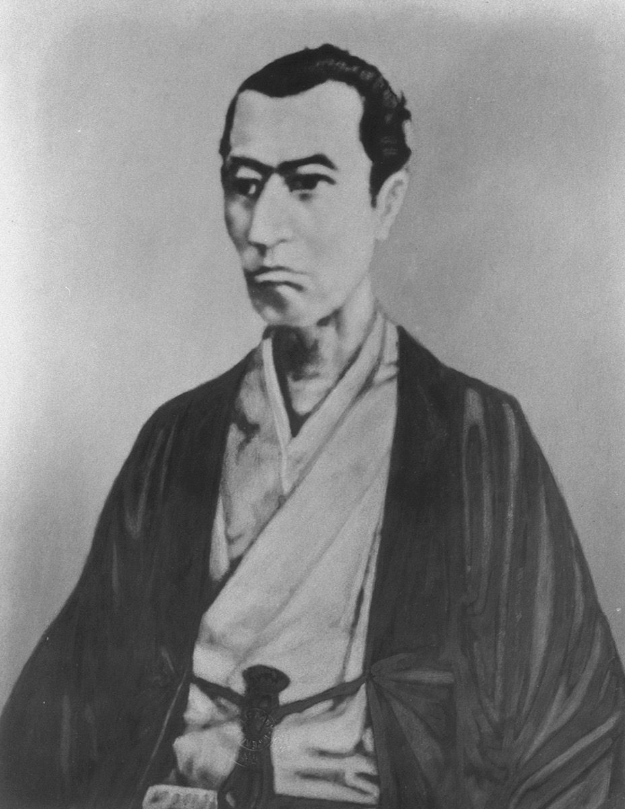
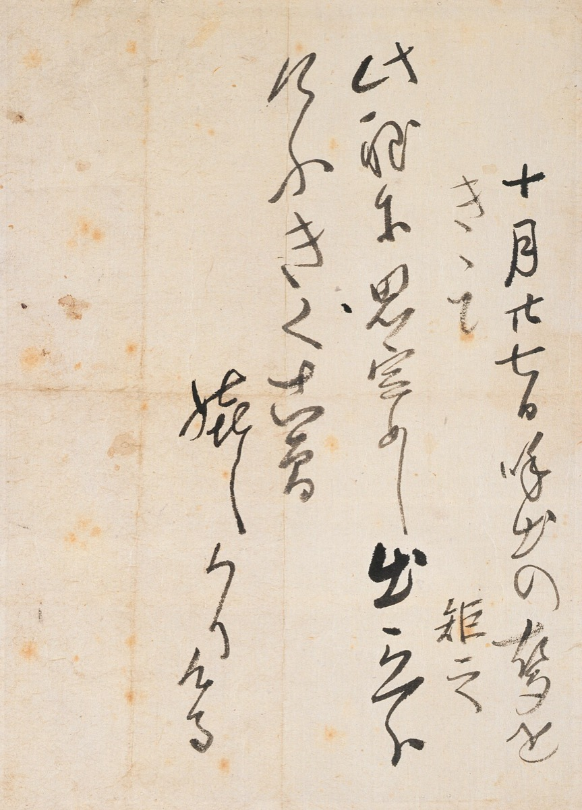
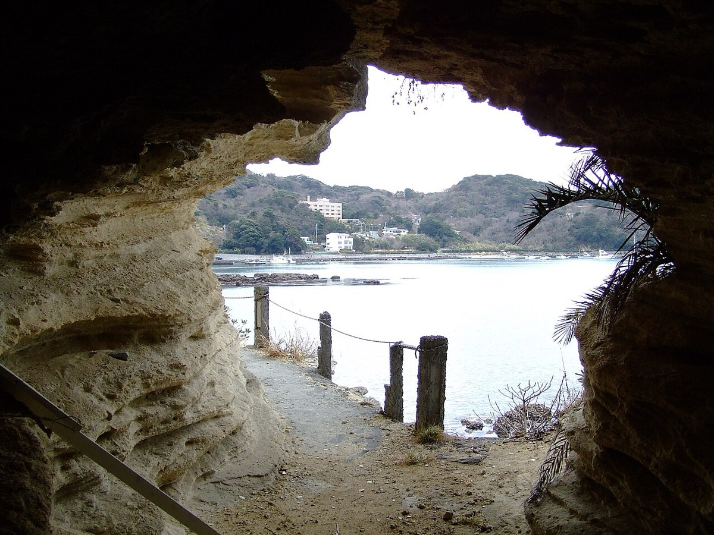
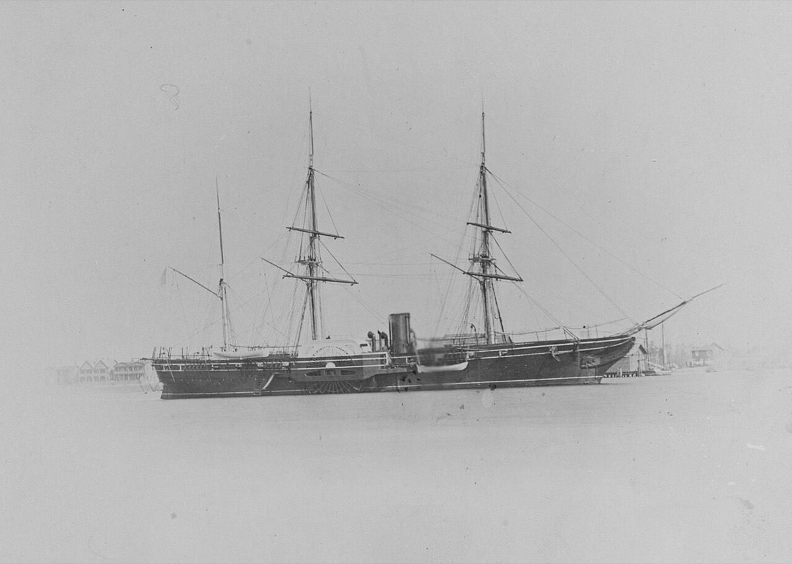
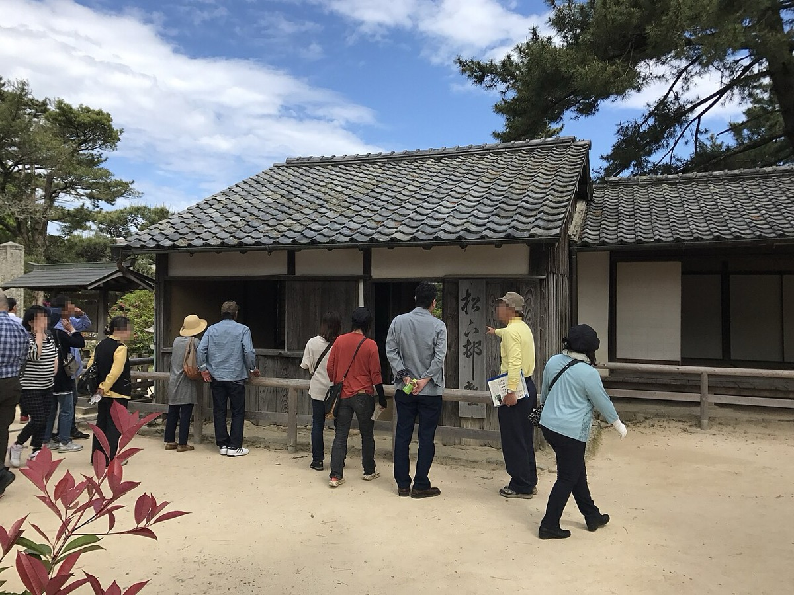
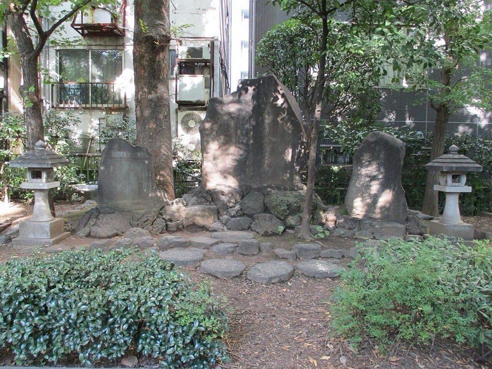
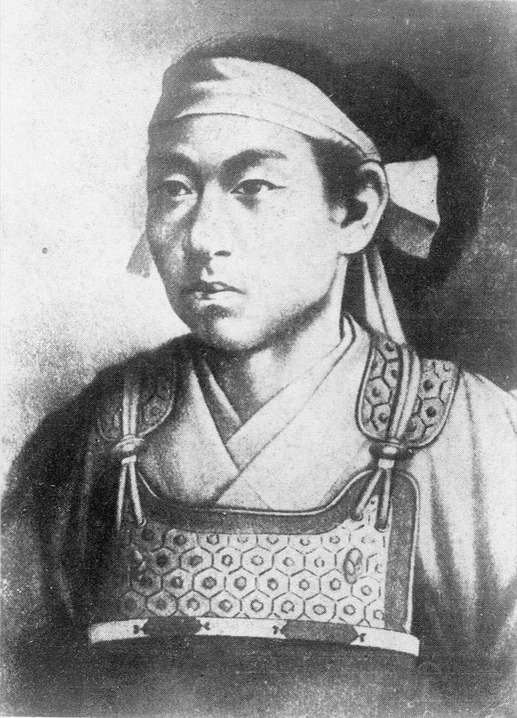
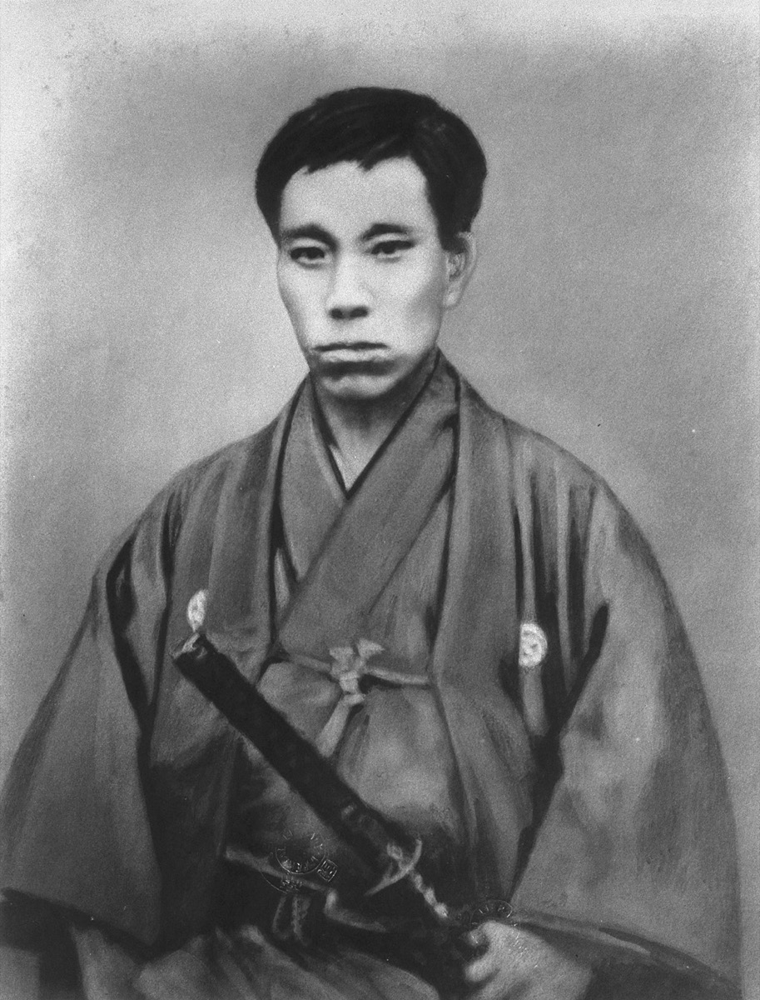
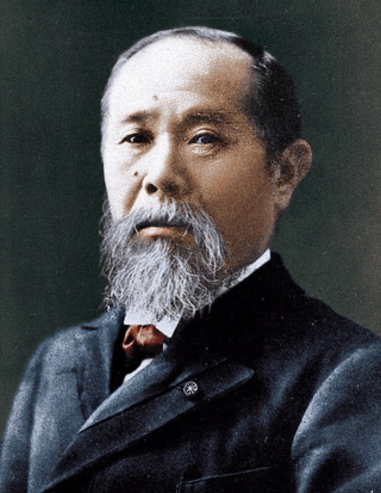
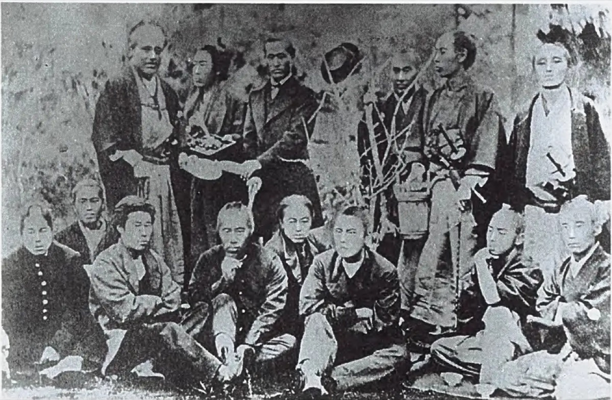

満29年で斬首された長州藩の山鹿流兵学師範である。主張1は、間部詮勝への計画の自供が下獄と死罪の決定要因だったかという因果である。『留魂録』と断罪書は文書上整合するが、口書原本未照合のため判定は限定的支持に留める。主張2は、同一塾の門下で、品川が優秀と挙げた主要7名の1864年武力死率が行政・外交経路より高いかという比較である。名簿が単一の二次資料依存のため判定不能とする。
改稿日 2026年11月11日（初稿 2026年9月26日）。和暦と西暦を併記する。年表の満年齢は生年月日1830年9月20日（天保元年／文政13年8月4日）からの年差で算出している。 萩市公式の略年譜は数え年（出生時を1歳）で記すため、同表の「30歳」は本ページの満29歳と一致する。没後の項目は没年1859年からの年差である。 検証の一次は『留魂録』の自己記述と断罪書（『吉田松陰全集』第10巻所収）である。日付は萩市略年譜、下田事件はペリー『日本遠征記』で突合する。山県有朋・伊藤博文が権力者になった後に語った松陰像は二次として分離する。
先に結論を置く。
1. 文書上は、間部計画の自供と死罪が整合する。 安政6年7月9日の評定所で問われたのは梅田雲浜との面会と御所落文の2条だけだった、と『留魂録』は書く3。松陰は問われていない間部詮勝への計画を自首し、「鯖江侯の事に因りて終に下獄とはなれり」と記す3。安政6年10月27日の断罪書は、蟄居中に下総守（間部）へ強談を企てたことを罪状本文に書き、「公儀を憚らざる不敬」として死罪とする36。文書同士は整合するが、口書原本は未照合であり、因果の確定までは下りない。
2. 品川主要7名と行政経路の死亡率比較は、一次名簿が無いため判定不能である。 二次整理では、品川が優秀と挙げた主要7名の1864年武力死が5／7、行政・外交経路（伊藤・野村・品川）が0／3と出る31262728。ただし7名の固定名簿そのものが後年の単一二次資料に依存する。品川の回顧原文または入門帳に基づく固定名簿が無い限り、比較命題を支持とも棄却ともできない。
読者と判断：政治運動の人材育成と刑罰を読むとき、次の2点を切り分けられる。第一に、自供が下獄・死罪を引き起こしたかという因果を、本人文書と断罪書の文書整合だけでどこまで言えるか。第二に、同一塾で品川が優秀と挙げた主要7名の1864年武力死率が、行政・外交経路より高いか。材料は『留魂録』、断罪書、門下の経路別の死因年表である。
分解：物理的制約は幽閉空間（野山獄・伝馬町）と書物の流通である。お金の流れは吉田家の家禄約26石と藩の扶持・塾舎の維持であり、富裕な結社ではない4。利得の帰属は門下の急進翼と長州藩上層に分かれる。幕府司法と明治後の顕彰団体も利得側に入る。法と強制力は脱藩罪・評定所・斬罪である。時間は塾の約14か月に対し、門下の活動寿命と1864年の武力局面の短さである。


日付が確定した出来事だけを置いた。各項目は事実、具体、なぜそれが後を決めたかの3層である。 期のボタンで絞り込める。日付の右は、その時点の満年齢（生年月日1830年9月20日からの年差）である。没後は没年1859年からの年差である。
見出しと主張の対応は次のとおりである。I・II は分解の前提。III は主張1の検証。IV は主張2の検証。V は両主張のあとの利得再配分である。
文政13年8月4日（1830年9月20日）、長門国萩の松本村で長州藩士・杉百合之助の次男として生まれた。和暦は萩市略年譜が「天保元年」、国立国会図書館系の通説が「文政13年」とする。天保改元は同年12月のため、8月4日時点の正式年号は文政13年である。本ページは両方を併記する1234。
天保5年（1834年）に山鹿流兵学師範の叔父・吉田大助の仮養子となり、天保6年6月20日（1835年）に大助の急死で吉田家の家督を相続した1。家禄は約26石である4。嘉永元年（1848年）に独立の師範となった。その後に九州遊学（1850年）と江戸での佐久間象山入門（1851年）が続く。東北遊歴での脱藩と士籍剥奪は1852年である1。外圧を測る動機は家職の兵学に沿う。資金規模は結社を維持できる水準ではない。
嘉永7年／安政元年3月27日（西暦1854年4月25日前後）、金子重之輔とともに下田から小舟を出し、ペリー艦隊旗艦ポーハタン号へ乗り込んだ。渡航は拒否され、自首した15。ペリー側の『日本遠征記』は、時計鎖を褒める仕草で書面を滑り込ませた描写を残す57。安政元年10月24日から安政2年12月15日まで野山獄に入った。同期間の読書冊数は二次資料で割れる。松陰神社公式は『野山獄読書記』に依り492冊、1991年の研究集計は596冊、萩市観光協会は600冊超とする38378。本ページは原『野山獄読書記』の一次画像で桁を確定していないため、確定値としては採用しない（disputed）。『幽囚録』と孟子講義はこの幽閉空間で成った。


安政3年（1856年）3月、杉家の幽囚室で講義を始めた。安政4年11月5日（1857年）に8畳の塾舎を開き、安政5年12月26日の再投獄までが実質の主宰期間である1。約14か月である。教育方法は次の4点である。時間割を固定しない。身分を問わず入塾させる。時事討論を置く。読書メモを提出させる812。塾生総数は萩市観光協会が「90余名」、国立国会図書館の肖像解説が「約80人」とする（諸説・single-sourceの幅）834。
安政5年11月6日、塾生17名と血盟し間部詮勝要撃を画策した1（single-source）。藩は武器貸与を拒み、久坂玄瑞・高杉晋作・桂小五郎ら主要同志の多くは反対または自重した232。同じ教室でも、最過激の計画は共有されなかった。血盟17名は実行可能な戦闘組織の規模ではなく、署名の規模である。

安政6年5月25日に江戸へ護送され、7月9日に評定所へ呼び出された1。検証は次の2系統を突き合わせる。(1) 『留魂録』が書く尋問の順序。(2) 安政6年10月27日の断罪書が書く罪状文言。
『留魂録』第二条は、当初の尋問を次の2条に限定する。梅田源次郎（雲浜）が長門へ下ったときの密議の有無。御所内の落文の筆跡が似ているという申立である3。松陰は両条を否定したうえで、幽囚中の苦心を述べ、大原重徳の西下要請と鯖江侯（間部詮勝）を要する計画を自首した。「鯖江侯の事に因りて終に下獄とはなれり」と本人が因果を書く3。第五条は情報の非対称を明示する。はじめ幕がすでに諜知していると考えて申し立てたが、「幕にて一円知らざるに似たり」と気づいた。知らぬ事を強いて申し立てて株連を広げる愚を避け、要撃を要諌と言い換え、同志の氏名を隠した。幕裁は本人一人を罰し、他への連及は無かった、と記す3。
断罪書（『吉田松陰全集』第10巻「関係公文書類」所収。転載経路はsingle-source）は、死罪の理由を次の構成で書く。蟄居中に海防・通商・国政に関わる著述をしたこと。殊に、下総守（間部）通行の途中へ出て処置を伺い、採用されなければ一死の覚悟で建議を押し立てようと企てたこと。これを「公儀を憚らざる不敬の至り」とし、殊に蟄居中の梅田源次郎への面会も加えて、「旁ゝ不届に付き死罪申付くる」とする36。つまり幕府側の最終文言でも、間部への強談計画は罪状の中核にある。梅田面会は加重事由として併記されるが、当初尋問の2条だけで死罪とした形にはなっていない。
代替比較は次のとおりである。(a) 『留魂録』では当初2条に間部が無く、自供後に下獄したと書く。(b) 断罪書では間部への強談が死罪文言の中核に入る。(c) 血盟同志への連座が無かったという『留魂録』の記述は、幕府が計画を自供前に把握していなかったという情報非対称と整合する。(d) 口書では要諌への言い換えと、刺しちがえ・切り払いの書き込みを巡る争弁が残る3。口書原本の全文は未照合であり、幕府側が文言を加重した可能性は残る。ただし断罪書本文は「要撃」ではなく、建議を押し立てる強談として書いており、『留魂録』の要諌への言い換えとも大きく矛盾しない。
以上より、反証条件を文書面では満たさない。ただし口書原本が無いため、判定は限定的支持に留める。言えるのは「文書上は整合する」までである。因果の確定、「唯一の原因」、「井伊直弼が遠島案を死罪へ改めた」までは言わない。
10月25–26日に『留魂録』を正副2通で書き、10月27日（1859年11月21日）に伝馬町で斬首された。満29歳である11434。

七月九日、はじめて評定所呼び出しあり。…この二条のみ。…鯖江侯を要する等のことを自首す。鯖江侯のことに因りて、つひに下獄とはなれり。 『留魂録』第二条（書き下し）。青空文庫3
七月九日、ひととほり大原公のこと、鯖江要駕のことなど申し立てたり。…すでにして逐一口を開きしに、幕にて一円知らざるに似たり。 『留魂録』第五条（書き下し）3
主張2は、同一塾の命名可能門下で2群を比較する。(A) 品川弥二郎が後年に「優秀」と挙げた主要7名。(B) 行政・外交経路の伊藤・野村・品川。名簿(A)は死亡結果ではなく能力評価で固定する、という設計である。測る指標は1864年の武力死率である。反証条件は、(A)の1864年武力死率が(B)の1864年死亡率以下になることである。ただし名簿(A)の出典は後年の単一二次資料（報道整理）であり、品川の回顧原文は未照合である31。
| 表A 品川の主要7名（分母=7。優秀評価で固定） | |||||
|---|---|---|---|---|---|
| 氏名 | 主な経路 | 没年 | 死因の型 | 1864年武力死 | 出典 |
| 吉田稔麿 | 池田屋事件 | 1864 | 武力 | 含む | 2731 |
| 杉山松助 | 池田屋事件 | 1864 | 武力 | 含む | 31 |
| 久坂玄瑞 | 禁門の変・自刃 | 1864 | 武力（自刃） | 含む | 2631 |
| 入江九一 | 禁門の変 | 1864 | 武力 | 含む | 2831 |
| 寺島忠三郎 | 禁門の変・自刃 | 1864 | 武力（自刃） | 含む | 3135 |
| 高杉晋作 | 奇兵隊・四境戦争 | 1867 | 病死（武力組織側） | 含まない | 1531 |
| 前原一誠 | 維新後・萩の乱 | 1876 | 処刑 | 含まない | 231 |
表Aの1864年武力死率は5／7である。残る2名は、高杉の1867年病死と前原の1876年処刑である。
| 表B 対照：行政・外交経路（同一塾。分母=3） | ||||
|---|---|---|---|---|
| 氏名 | 塾との関係 | 主な経路 | 没年 | 1864年死 |
| 伊藤博文 | 入門（在塾は短い） | 英国留学・功山寺後の政治 | 1909 | 生存 |
| 野村靖 | 入門（入江九一の弟） | 県令・内務・逓信 | 1909 | 生存 |
| 品川弥二郎 | 入門 | 御楯隊のち内務大臣 | 1900 | 生存 |
表Aの7名は品川の回顧を伝える二次整理に依る（single-sourceの人選）。死亡結果では選んでいない、という設計だが、名簿の一次確認はできていない。個別の没年は記事で突合した。表Bの3名も同一塾の入門者である。山県有朋は正式入塾が諸説のため表から外す2。久坂・高杉の要撃反対は通説に残る232。
観測上の差は次のとおりである。(1) 二次整理の表Aでは1864年武力死率が5／7、表Bでは0／3である。(2) 差そのものは反証条件を満たさない方向に見える。(3) しかし名簿(A)が単一二次資料に依存するため、主張2の判定は支持にできない。判定不能とする。判定に必要なデータは、品川の回顧原文（発言・筆記の一次）または入門帳に基づく固定名簿と、死因の一次突合である。(4) カリキュラム因果と自己選別因果も、名簿が不安定な段階では判定しない。(5) 在塾中に要撃へ反対した久坂が死後に禁門へ入った事実は、カリキュラム一様効果の反例候補になるが、他塾との比較が無いため因果判定には使わない。




文久3年（1863年）に遺骨を世田谷若林へ改葬した1。松陰神社は世田谷で明治15年（1882年）、萩で明治23年（1890年）に創建された216。2015年、松下村塾は「明治日本の産業革命遺産」の構成資産としてUNESCOに登録された25。伊藤・山県が政府中枢に就いた後、松陰は「維新の精神的指導者」として再構成された。同時代の書簡で逐語確認できない逸話は、本ページでは一次に置かない。顕彰空間の写真は、主張1・2の検証対象（本人文書・経路別死亡率）から外れるため置かない。
役職・資本・選挙のない人物である。測れるのは時間と尋問の件数と門下の経路別の生死である。
| 項目 | 数値 | 時点・条件 |
|---|---|---|
| 生年月日 | 1830-09-20 | 天保元年／文政13年8月4日134 |
| 没年月日 | 1859-11-21 | 安政6年10月27日、伝馬町134 |
| 斬首時満年齢 | 29歳 | 誕生日経過後。数えは301 |
| 家禄 | 約26石 | 吉田家系4 |
| 野山獄第1回 | 約14か月 | 1854.10.24〜1855.12.151 |
| 獄中読書（第1回野山獄） | 492／596／600超 | 1854.10.24〜1855.12.15。神社公式49238／研究集計59637／観光協会600超8。一次画像未照合のため確定不可（disputed） |
| 松下村塾主宰 | 約14か月 | 1857.11.5〜1858.12.261 |
| 評定所の当初尋問 | 2条 | 梅田面会・落文。間部は問われず（『留魂録』）3 |
| 断罪書の死罪事由 | 間部強談＋著述＋梅田面会 | 安政6年10月27日。間部を中核に明記（転載・single-source）36 |
| 間部要撃の血盟 | 17名 | 1858.11.6。萩市略年譜1（single-source） |
| 塾生総数 | 約80〜90余名 | NDL約80／観光協会90余（諸説）348 |
| 品川主要7名の1864年武力死率 | 5／7（二次） | 池田屋・禁門。名簿はsingle-source二次。主張2は判定不能31 |
| 行政・外交経路の1864年死亡率 | 0／3 | 伊藤・野村・品川（表B）32 |
| 『留魂録』執筆 | 2日間 | 安政6年10月25–26日。正副2通314 |
類型は主張1・2の検証で残った失敗に限定する。旧稿の「作戦／組織／法廷／人材／顕彰」の5件列挙は使わない。
評定所の起点は梅田・落文の2条だった、と『留魂録』は書く3。松陰は幕が既知だと考えて間部計画を開示し、知らなかったと気づいたあとで氏名を隠した、とも書く。断罪書はその自供内容を死罪の中核に据えた。連座を最小化しようとした自己記述と、本人一人への死罪は表裏である。口書の刺しちがえ文言を巡る争弁は、加重の余地として残る336。
久坂・高杉は間部要撃に反対した232。それでも松陰の死後、京都の武力闘争または藩内武力組織へ入った。在塾中の態度と死後の経路は一致しない。経路比較の補足であり、カリキュラム因果の本証にはしない。
明治以降、松陰は人材輩出の象徴として再構成された。行政・外交経路で生存した門下と神社・世界遺産が利得を受けた、と推測する。京都武力経路の高死亡率は、短い塾の成功譚の外に置かれやすい。主張2は、顕彰の物語ではなく経路別の死亡率で測る設計だが、名簿の一次確認が無いため判定不能である。
| 失敗 | 案件 | 時点 | 測れる指標 |
|---|---|---|---|
| 1 情報の自己開示 | 評定所での間部自供 | 1859.7–10 | 『留魂録』の2条→自供→下獄。断罪書の間部強談文言336 |
| 2 反対後の武力参加 | 久坂・高杉 | 1858反対→1864–67 | 禁門自刃／奇兵隊側の病死2615 |
| 3 顕彰の上書き | 神社創建・UNESCO | 1882–2015 | 創建年と登録年。死亡率説明とは別系統1625 |
主張の検証に必要な範囲に限る。
自供と株連の最小化。『留魂録』は、幕が知らぬ計画を開示したことと、同志氏名を隠したことを同じ文書で書く3。公開の対象と非公開の対象を本人が選んだ。
草莽崛起。安政6年4月7日付、北山安世宛書状で「草莽崛起の人を望む外頼なし」と記したのが初出とされる2。間部要撃と伏見要駕が藩・同志に拒まれた後の語である。在野の蜂起を藩権力の代替として置く。
四時の説。処刑前日の『留魂録』第八節は、寿命の長短ではなく各寿命の内部完結を述べる3。刑死の自己叙述であり、門下への継承要請とセットである。
身はたとひ 武蔵の野辺に朽ちぬとも 留め置かまし 大和魂 『留魂録』冒頭。安政6年10月25日3
主張の検証に直結する発言に限った。出典未確定の言い回しは載せない。
短期の利得者は、推測として幕府司法である。文書上は、知らなかった間部計画を自供で把握し、断罪書の中核に据えて死罪とした形になる。斬首は1859年11月21日に執行された336。長州藩上層は、武器貸与を拒み再投獄することで藩への連座リスクを下げた、と推測する。中期の利得者は、推測として行政・外交経路で生存した門下（伊藤・品川・野村ら）である。殉教者としての松陰像を政治資本にできた、と推測する。損失側は、品川主要7名のうち1864年に死んだ急進翼である、と二次整理からは判別できる。長期の利得者は、推測として松陰神社と世界遺産観光である。教育遺産としての登録は、経路別死亡率の説明とは別の利得系統である25。

.jpg){kind=link}

_photograph_NH_48102.jpg){kind=link}